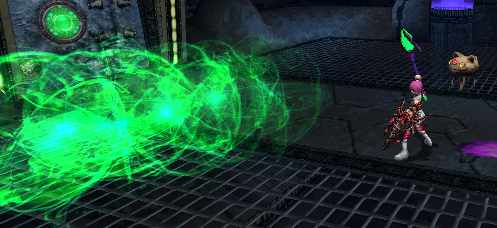
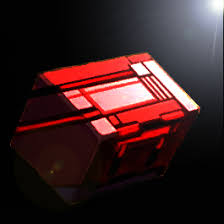

현재 적용
Ver.0.944 핵심 변경
NEW DROP
MADAM'S BRACELET
- 획득
- New MSB · Olga Flow
- 드롭률
- 1/64 · All IDs · Ultimate
- 보너스
- ATA +25
- 테크
- Resta/Anti +100%, Rabarta +70%
도감 상세 →
BAZAAR TRADE
LIGHTNING GARMENT
올레지보다 Light/Dark 저항과 Grants 강화에 초점을 맞춘 전 클래스용 교환 방어구.
- 교환 NPC
- Phantastic Bazaar · RAcaseal
- 재료
- Secret Ticket ×99
- 수치
- DFP 210 · EVP 170 · ATA +20
- 효과
- Grants +50%
Secret Ticket: Simulator 2.0 또는 Random Attack Xrd Stage의 secret clear 보상.
도감 상세 →
QUEST / QOL
퀘스트와 무기 변경
- New MSB가 EP2 > Destiny에 추가.
- Simulator 2.0에서 사망해도 도시로 강제 귀환하지 않음. 동료의 부활 또는 Scape Doll 사용 가능.
- Phantastic Bazaar에 Valentine, Easter, Halloween, Xmas, Other Shop 추가.
- NUG-2000 BAZOOKA 콤보 해금, special 부여 가능.
확정 예고
9월 1일 업데이트

NEW WEAPON
SOUL ERASER
“혼돈의 에메랄드가 박힌 마성의 지팡이. 단 한 발로 적을 소멸시킬 수 있다고 전해진다.”
- 타입
- Slicer
- 클래스
- Human / Newman
- Special
- Hell
- 사거리
- 130.0
- 타깃
- 7
- 획득
- World of Illusion · Olga Flow
같이 적용될 시스템 변경
- TP가 부족해도 Spirit special이 miss 처리되지 않도록 변경.
- 명령어로 HP Material 초기화 지원 예정.
- Fragments of Orb [Yellow] / [Green]을 기존 퀘스트에 추가.
- World of Illusion도 사망 시 도시 귀환 판정을 제거할 계획.
- 일부 무기 업데이트 포함.
MIRACLE CHAIN & 한정 복각
- MIRACLE CHAIN이 Other Shop에 추가.
- 여성 전용 무기.
- Special attack이 Lv6 Shifta / Deband를 시전.
- Lost Soul Ripper [Extreme]이 9월 1일부터 2주간 플레이 가능 예정.
개발 예고
9주년 아이템 선공개

9TH ANNIVERSARY
AEGIS OF ISOLATION
“착용자를 고립시키는 저주받은 희귀 실드. 어떤 기능을 비활성화하는 대신, 사용한 모든 회복약의 효율을 극대화한다.”
- Shield · Class ALL · 요구 레벨 150.
- Resists 32-32-32-24-24.
- Monomate와 Dimate의 회복량을 Trimate 수준으로 최대화.
- 두 가지 전용 기능 중 나머지 효과와 정확한 DFP/EVP·보너스는 아직 비공개.
- 이벤트 종료 후 일반 퀘스트에도 추가되지만 더 낮은 드롭률로 예정.
예고 수치다. 패치노트가 공개되면 확정 정보로 교체해야 한다.
개발 예고
Millennium Shop 향후 제작 아이템
9월 말~10월 목표
TOOL → WEAPON
PHANTASMAL ORE “SYNCESTA”
DOUBLE CANNON을 ALTERNATIVE CANNON으로 변환.
- 결과 타입
- Slicer
- 클래스
- HU
- 공개 재료
- Chaos Engine ×1 · Syncesta ×2 · Proof of Sword Saint ×1
TOOL → WEAPON
ASTRAL ORE “IRITISTA”
LAST EMPEROR를 ASTRAL BLADE로 변환.
- 결과 타입
- Twin Sword
- 클래스
- FO
- 공개 재료
- Magic Stone “Iritista” ×2 · Red Crystal ×1 · Luminous Field ×2
두 레시피 모두 Millennium Photon Core 수량과 일부 재료가 아직 가려져 있다. 지금은 공개된 재료만 선행 파밍하고, 확정 공지 전 소비하지 않는 편이 안전하다.
VR Test Destiny: SandstormRed/Blue/Yellow/Green Crystal 체계, Astral Saber, Fragments of Orb 예고.
VR Test OMEGA: OblivionMATRIX SCOPE, Star Eulogy, Astral Claw/Saber 개선, Samurai Armor 상향.
Toward the Multiverse Lv.III★9 보스 러시, MA&X76 OMEGA 및 신규 희귀 유닛 보상.
New MSB & BazaarMadam's Bracelet, Lightning Garment, 계절 상점 통합, NUG-2000 콤보 해금.
Soul Eraser & 시스템 업데이트Spirit 판정, HP Material reset, Yellow/Green Fragments, Miracle Chain.